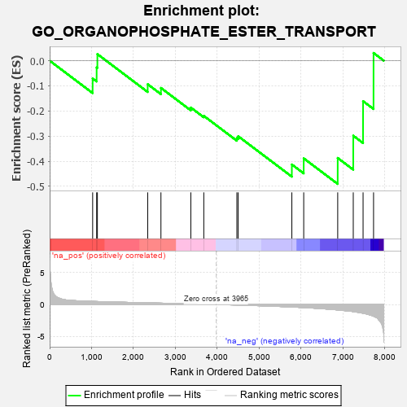

| | | Dataset | 7d |
| Phenotype | NoPhenotypeAvailable |
| Upregulated in class | na_neg |
| GeneSet | GO_ORGANOPHOSPHATE_ESTER_TRANSPORT |
| Enrichment Score (ES) | -0.49018672 |
| Normalized Enrichment Score (NES) | -1.163283 |
| Nominal p-value | 0.29597703 |
| FDR q-value | 0.67683166 |
| FWER p-Value | 1.0 |
Table: GSEA Results Summary

Fig 1: Enrichment plot: GO_ORGANOPHOSPHATE_ESTER_TRANSPORT
Profile of the Running ES Score & Positions of GeneSet Members on the Rank Ordered List
| PROBE | GENE SYMBOL | GENE_TITLE | RANK IN GENE LIST | RANK METRIC SCORE | RUNNING ES | CORE ENRICHMENT | | 1 | G6PC3 | | | 1026 | 0.478 | -0.0710 | No |
| 2 | G6PC | | | 1121 | 0.459 | -0.0270 | No |
| 3 | ATP9B | | | 1139 | 0.456 | 0.0261 | No |
| 4 | ANO6 | | | 2339 | 0.255 | -0.0936 | No |
| 5 | XKR6 | | | 2655 | 0.205 | -0.1084 | No |
| 6 | EPG5 | | | 3368 | 0.094 | -0.1865 | No |
| 7 | ABCD1 | | | 3677 | 0.047 | -0.2195 | No |
| 8 | XKR4 | | | 4466 | -0.087 | -0.3079 | No |
| 9 | NPC2 | | | 4498 | -0.093 | -0.3005 | No |
| 10 | ABCG1 | | | 5778 | -0.399 | -0.4129 | Yes |
| 11 | ANO4 | | | 6061 | -0.494 | -0.3884 | Yes |
| 12 | ABCA4 | | | 6872 | -0.851 | -0.3869 | Yes |
| 13 | ABCA1 | | | 7243 | -1.113 | -0.2984 | Yes |
| 14 | CPTP | | | 7477 | -1.373 | -0.1610 | Yes |
| 15 | ANO7 | | | 7727 | -1.838 | 0.0307 | Yes |
Table: GSEA details [plain text format]
 Fig 2: GO_ORGANOPHOSPHATE_ESTER_TRANSPORT: Random ES distribution
Fig 2: GO_ORGANOPHOSPHATE_ESTER_TRANSPORT: Random ES distribution
Gene set null distribution of ES for GO_ORGANOPHOSPHATE_ESTER_TRANSPORT